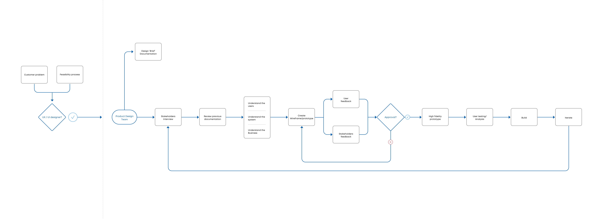
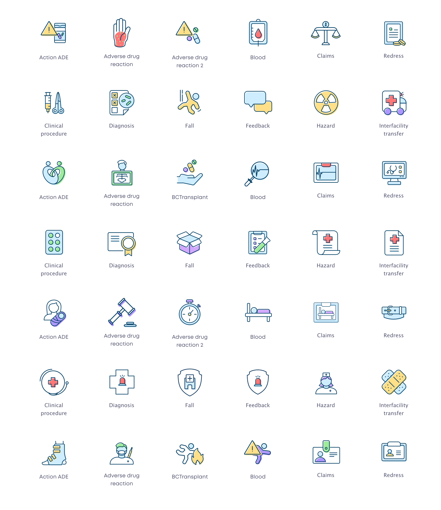

RLDatix is a patient-safety organisation that builds incident reporting and risk management software for healthcare and social care. After a series of mergers, the product suite had grown into several legacy platforms — and this project would land on the one that was about to become the company's flagship.
Every report starts here. If reporting is hard, incidents go uncounted.
The icon wall is the first screen a clinician sees when something goes wrong on a shift — a fall, a medication error, a near miss, a piece of equipment that failed. If it's not obvious where to report, the clinician either picks the wrong category (muddying the data that governance boards rely on) or doesn't report at all.
That's not a usability problem. That's a patient-safety problem. Governance teams use this data to spot trends before they become disasters. Under-reporting is quiet failure.
Rebuilding the icon wall into the next-generation platform — and fixing what was broken along the way.
The original icon wall was built years ago in RL6. Business need and user feedback said it was time to rebuild it into the new platform and fix the usability issues it had accumulated.
Front-line users need to…
- See the different types of events they can report.
- Filter by type or category.
- Understand a report type by its visual alone.
- Get help when they're unsure what to select.
Admin users need to…
- Design a new wall — add, remove, order, label icons.
- Link each icon to a specific form in any licensed module.
- Define help text for every icon on a wall.
- Choose the default logged-out wall.
What we set out to fix
- One admin flow, not three. The existing admin panel was split across three disconnected flows. Building a single wall could take 40 minutes.
- A unified icon language. Legacy icons carried years of drift. Clinicians were frustrated by unfamiliar symbols; cognitive load was high at the end of a shift.
- Efficiency that compounds. Findability of destination forms, time-to-report, misclassified reports — each one tied to a metric governance teams cared about.
Four principles we wrote on the wall.
-
01
Clarity saves time. Time saves lives.
The only design north star worth having in clinical software. If something makes the clinician hesitate, we remove it.
-
02
One visual language across the portfolio.
Icons, colours, categories — the same set of rules shared across every RLDatix product. No more drift.
-
03
Scale through customisation.
No two hospitals report the same incidents the same way. The product has to let administrators shape their own icon wall without talking to us.
-
04
Accessible by default, not on request.
WCAG AA at minimum, keyboard-first, every icon paired with a visible label. In healthcare, accessibility is regulatory, moral, and clinical at once.
Design thinking, adapted to the realities of healthcare SaaS.
Our framework went from research and stakeholder interviews, through redefining the problem, to ideation, wireflows, testing, and prototyping. I led the definition phase, owned the visual direction, and drove validation with clients.

- 0professional-services team interviews as user proxies
- 0+previous user queries analysed for recurring patterns
- 0major hospital clients co-designing the admin flow
- 0wireflow iterations before lock
Starting with the structure of information.
Because we didn't yet have direct access to clinicians, we ran informal interviews with the professional-services team (who educate users on the platform and absorb their complaints) and analysed over 1,400 previous user queries.
I designed the flow of needs and tasks starting with wireframes, validated with stakeholders, and sweated the interaction details — including the notification system that surfaces when admins rearrange live walls.

A unified icon language for clinicians at the end of a shift.
There are no defined patterns to replicate for clinical reporting. Because most icons don't carry a standard meaning in this context, we committed to visible text labels on every one to reduce ambiguity.
"If it takes more than five seconds to think of an appropriate icon, it is unlikely that an icon can effectively communicate that meaning."
— The five-second rule we held ourselves to throughout
Our audience is clinicians and nurses at the end of a shift — fatigued, under pressure. After benchmarking other platforms and running several rounds of iteration with stakeholders and four hospital clients, we landed on three critical decisions:
-
01
Linear icons with offset backgrounds.
Universal in shape, with a friendly and personal touch from the offset colour block behind each glyph.
-
02
A consistent grid.
Every icon lives on a 50 × 50 px artboard with a 1 px border. One shared frame across 380+ symbols.
-
03
Tooltips that stay.
Some icons represent broad concepts. Keeping tooltip text visible and accessible was non-negotiable.

Four surfaces, one system.
The icon wall is only the entry point. Behind it sits the admin builder, the event form that every icon opens, and the analytics surface that turns a year of reports into governance decisions. All four share the same rules.
- Event
- Details
- People
- Review
Patient fall
Trust overview 12 months
| Event | Count | Severity | Trend |
|---|---|---|---|
| personal_injuryPatient fall | 2,412 | Amber | ↑ 8% |
| medicationMedication error | 1,864 | Red | ↓ 14% |
| warningNear miss | 1,402 | Green | ↑ 22% |
| medical_servicesEquipment failure | 821 | Green | ↓ 6% |
What happened after the rollout.
Measured across 600+ healthcare organisations and four international markets, 18 months after the MVP.
"Laura didn't just design a landing page. She designed the vocabulary the next decade of our product is going to be built on. Every icon, every category, every interaction comes back to what she wrote on the wall."
— Director of Product, RLDatix
What I'd carry forward.
- Proxies for users are not users. Data and informal research got us far, but the lack of direct time with clinicians capped how deep we could go. We scheduled a full programme of user testing after MVP rollout — every design system needs a continuous listening loop, not a one-off discovery.
- Distributed teams need a source of truth. London, Chicago, and Toronto meant timezone gaps and lost context. A shared, well-maintained Figma library and decision log became the spine of the project.
- Designs create downstream projects. Not every client would have the icon wall as their landing page — so we needed a new navigation element, which broke some breakpoints, which spawned a parallel navigation project. Plan for the ripple.
- Change is emotional. Some clinicians had lived in the old interface for years. We shipped a switcher back to the old version for six months — dignity over purity.
- Engineering belongs in the room early. Bringing engineering in at definition saved weeks of designing components that couldn't be built, and bought trust we'd spend later on the harder calls.
- Re-reading old work pays. Coming back to this project later, I could question decisions I'd made at the time and see new opportunities. Worth doing on every project.
With the RLDatix product squad across London, Chicago and Toronto — product, research, engineering, and clinical advisors. Shipped as the flagship landing experience of the next-generation platform.
Back to all work →